Die häufigsten Fehler sind:
1. LED Streifen ist von hinten an angeschlossen: adressierbare LED Streifen haben eine Richtung, die durch kleine Pfeile auf dem Streifen gekennzeichnet ist. Der Anschluss der Datenleitung muss unbedingt von der Seite erfolgen, wo der Pfeil beginnt.
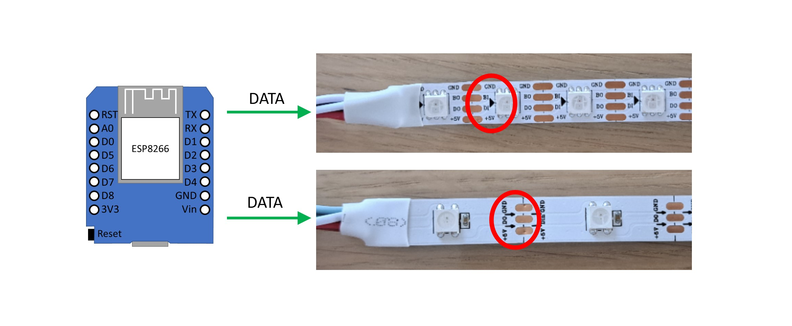
2. Falsches GPIO eingestellt: Prüfen Sie in WLED Einstellungen, ob als Datenausgang die richtige GPIO Nummer eingestellt ist. Die fertigen Controller haben korrekte Einstellungen meistens entweder auf dem Gehäuse oder auf der Platine aufgedruckt.
3. LED Streifen mit vielen LEDs angeschlossen und eingestellt, aber der Stromlimiter steht noch auf dem Default Wert (850 mA). Das wirkt oft so aus, dass LEDs bei Änderung der Farbe kurz blinken und sofort ausgehen oder sehr schwach leuchten. Prüfen und korrigieren Sie ggf. die Einstellungen in WLED.
4. Falsches LED Typ ist eingestellt. In WLED Einstellungen muss der richtige LED Typ und die richtige Farbenreihenfolge (RGB, BGR, etc.) eingestellt werden. Prüfen Sie, ob diese Einstellungen korrekt sind. LED Typ muss man wissen, die Farbenreihenfolge kann man notfalls einfach ausprobieren, welche die richtige ist. Speziell muss beim WS2814 LED Streifen aufgepasst werden, dieser muss in Einstellungen als SK6812 gewählt werden.
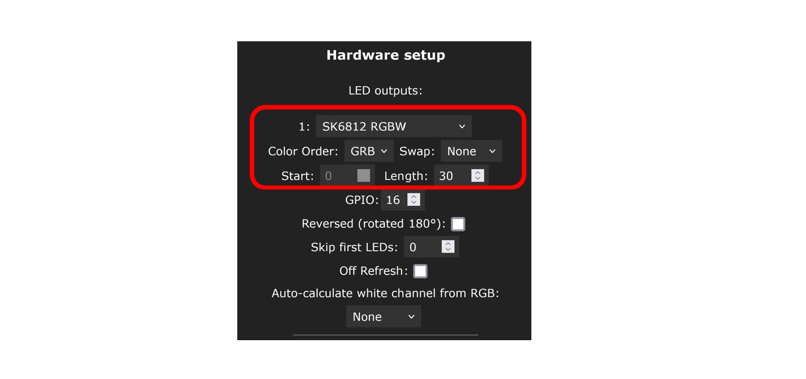
5. Verkabelung ist nicht in Ordnung. Die Verkabelung muss gründlich ausgeführt werden. Wackelkontakte, kalte Lötstellen etc. müssen vermieden werden. Sie müssen außerdem aus Sicherheitsgründen auf die richtige Dimensionierung der Kabel aufpassen.
Wenn WLED Software auf ihrem Controller zum ersten Mal installiert ist und Sie nicht bereits bei der Installation mit dem WEB-basierten Installer Ihre WiFi daten eingegeben haben, dann erzeugt bei einem Neustart der WLED Controller einen Access Point (WLAN) mit dem Namen WLED-AP. Das Passwort für dieses WLAN ist wled1234. Dieses Passwort kann in WLED Einstellungen unter Config->WiFi setup geändert werden.
Im initialen Zustand mit default Einstellungen versucht WLED SW mit dem eingegebenen WLAN sich zu verbinden. Klappt es nicht, wird wieder WLED-AP erzeugt. Also warten Sie einfach, bis WLED-AP wieder erscheint. Dieses verhalten kann jedoch in WLED Einstellungen geändert werden. WLED-AP kann also z.B. ganz verhindert werden. Wenn Sie das bereits so eingestellt haben, dann hilft nur ein „Hardreset“ oder Neuflaschen mit WLED SW.
Die Antwort auf diese Frage häng davon ab, ob man WLED nur ausprobieren möchte oder einen zuverlässig funktionierenden und sicheren Aufbau machen möchte.
WLED Auszuprobieren: dafür reicht ein ESP8266 oder ESP32 Mikrocontroller Board (z.B. die sogenannten D1 mini oder NodeMCU Boards), ein 5V Netzteil und ein 5V LED Streifen (fürs Anfang z.B. mit 30-90 LEDs). Auf dem Mikrocontroller wird WLED Software installiert (z.B. mit diesem Web-basierten WLED Installer).
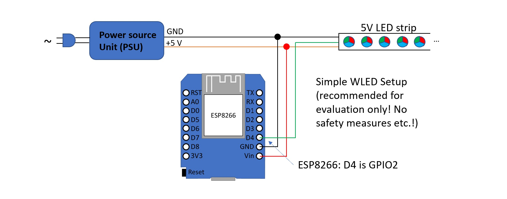
Für einen richtigen Aufbau müssen aber noch einige andere Dinge beachtet werden:
1. Für eine zuverlässige Datenübertragung vom Controller zum LED Streifen braucht man ein LevelShifter (insbesondere bei 12V oder 24V LED Streifen ist das Pflicht). Da muss man dann einiges zusammenlöten oder man kauft gleich einen professionellen fertigen WLED Controller. Diese sind auch aufgrund industrieller Fertigung/Bestückung deutlich zuverlässiger als jedes mit Hand gelöteter Aufbau.
2. Aus Sicherheitsgründen muss über die richtige Verkabelung (Länge, Querschnitt, Kontaktierungen) und zu integrierende Sicherungen nachgedacht werden. Insbesondere bei LED Streifen wird es komplizierter, weil man die sogenannten Zwischeneinspeisungen braucht. Diese müssen korrekt geplant und umgesetzt werden. Als Hilfestellung kann dabei WLED Calculator dienen.
3. LED Streifen können im Betrieb recht warm werden und im Fehlerfall sogar überhitzen. Wiederum aus Sicherheitsgründen muss man die Umgebung davon schützen: man sollte LED Streifen deswegen nicht einfach so verlegen, sollte idealerweise in Aluprofile oder ähnliches integrieren. Diese wirken im normalen Betrieb wie ein Kühlkörper und verlängern damit die Lebensdauer der LEDs. Im Fehlerfall können sie die Umgebung vom Brad schützen.
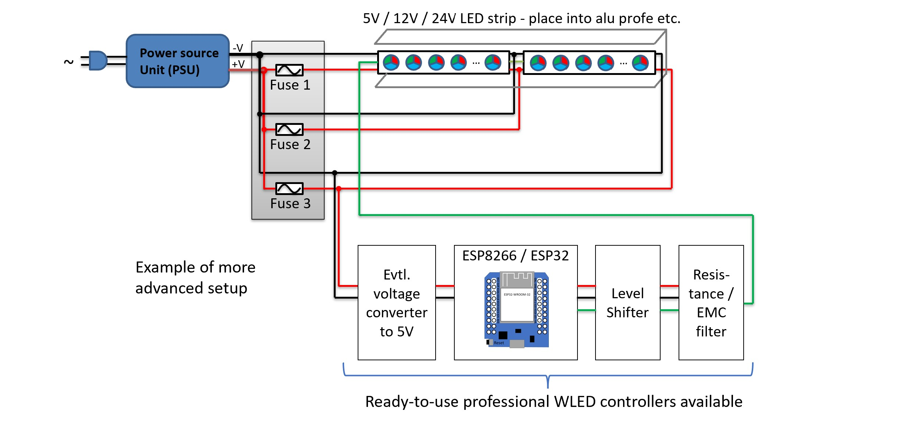
4. Um Energie zu sparen wenn die LEDs ausgeschaltet sind, Relais (oder spezielle Switch Board) können zusätzlich verwendet werden. Diese schalten die Stromversorgung der LEDs im Aus Zustand dann komplett ab.
Aktuell (Stand Sommer 2025) werden nur die Mikrocontroller der Firma Espressif, Typen ESP8266 und ESP32 (mit Dual Core) unterstützt. Die neueren Typen ESP32-C3, ESP32-S2 und ESP32-S3 werden auch unterstützt, jedoch ist die Installation bei diesen neueren Typen nicht so einfach: es existieren mehrere Hardwarevariationen/Boards, für die man die SW speziell kompilieren muss. Zu erwähnen ist noch, dass am Markt immer noch einige ESP32-C3 Boards (sog. Mini Ver 1.0.0) verkauft werden, wo WLAN nicht richtig funktioniert. Die anderen typen wie ESP32-C5, ESP32-C6, ESP32-P4 werden aktuell NICHT unterstützt.
Es ist auch zu erwähnen, dass die aktuellen Audio Reactive WLED Versionen nur ESP32 Mikrocontroller unterstützen. Der letzte Release für ESP8266 war WLED SR 13.0-beta3. Generell ist ESP8266 für die neuen WLED Versionen zu langsam.
ESP8266 basierte Controller können bis zu ca. 600-650 LEDs ansteuern. ESP32 basierte Controller könne bis zu 4.000 LEDs ansteuern. Dabei wird jedoch empfohlen, LEDs Streifen auf mehrere Eingänge zu verteilen, so dass an einem Eingang nicht mehr als 1000 LEDs angeschlossen ist: viele LEDs n einem Ausgang führen dazu, dass die Ansteuerungsrate sinkt und man bei schnellen Effekten dann Unregelmäßigkeiten sieht. Bei der Verwendung von einigen Übertragungsprotokollen muss außerdem berücksichtigt werden, dass diese eventuell auch nur eine eingeschränkte LED Anzahl unterstützen.
Viele 5V LED Streifen lassen sich auch ohne LevelShifter betreiben, insbesondere wenn die Leitung zwischen dem Controller und dem LED Streifen sehr kurz ist. Manchmal kann dabei aber zu Flickering kommen, z.B dass die LEDS mal kurz in weiß blinken. Auch größere Störungen sind möglich. Bei 12V oder 24V LED Streifen kommt man meistens ohne LevelShifter nicht klar. Ein LevelShifter wird aber auch bei 5V LED Streifen ausdrücklich empfohlen, insbesondere bei einem produktiven Einsatz, um einen störungsfreien Betrieb zu gewährleisten: ein LevelShifter passt den Signalpegel des Mikrocontrollers (3.3V) an den Signalpegel des LED Streifens (5V bei allen adressierbaren LED Typen).
Professionelle WLED Controller haben einen LevelShifter immer integriert.
Die Ansteuerung der adressierbaren LED Streifen Läuft mit Steuersignalen, welche eine Grundfrequenz im Bereich 800 kHz bis ins einstelligen MHz Bereich haben (je nach Typ). Entsprechend muss ein LevelShifter schnell genug sein, ob diese Signale sauber weiter geben zu können. Empfohlen werden daher schnelle Typen wie SN74AHCT125, SN74AHCT32 oder SN74LVC2T45. Typen wie SN74HCT (also ohne „A“) sind etwas langsamen und für LED Typen wie WS2812B i.O., für einige andere LED Typen können aber zu langsam sein. In jedem Fall nicht empfohlen sind mit Transistoren aufgebaute fertige bidirektionale I2C LevelShifter. Notfalls können diese verwendet werden, man sollte aber dann den Pull-Up Widerstand am Ausgang (meistens 10 kOhm) durch einen kleineren ersetzen (<=1 kOhm). Die SN74AHCT125 LevelShifter werden wie folgt verschaltet:
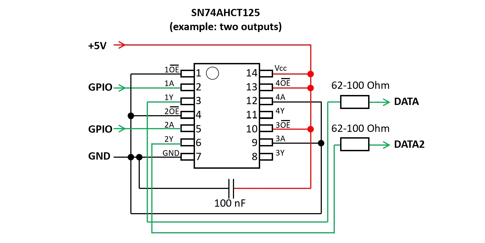
Bei kurzen Leitungen kann auch ein TXS0108 LevelShifter verwndet werden. Diese sind auch verfügbar bereits auf kleiner Leiterplate verlötet:
Im Folgenden sind verschiedene LevelShifter mit und ohne einen Widerstand in Data-Linie messtechnisch verglichen.
Zusammengefasst, können die Ergebnisse wie folgt interpretiert werden:
1) SN74AHCT ist die beste Wahl. Zusammen mit einem 60 Ohm Widerstand liefert er bis zu 2 Meter Länger der Datenleitung gute Ergebnisse. Auch bei 10 Meter ist das Signal noch gut brauchbar. Der Nachteil ist, dass er wegen seiner Geschwindigkeit (steile Flanken) hohe Überschwingungen erzeugt. Dem kann man mit einem EMV-Filter entgegnen, wie bei einem ABC! WLED V43 Controller verbaut. Bei kurzen Leitungen ist das sehr effizient, bei längeren Leitungen können die Schwingungen jedoch nicht ganz vermieden werden.
2) Die Messung bestätigt, dass ein I2C Levelshifter ist zu langsam, genauer gesagt der zweite Teil der Anstiegsflanke, denn jede Anstiegsflanke aus zwei Teilen besteht: einem schnellen Anstieg bis zu 3.3V und einem darauffolgenden langsamen Anstieg bis 5V, welcher meistens gar nicht komplett vollzogen wird. Ein Widerstand in der Datenleitung kann hier eher Kontraproduktiv wirken. Der zweite Teil der Anstiegsflanke kann mit einem zusätzlichen 1kOhm Widerstand zwischen dem I2C LevelShifter Ausgang und 5V etwas beschleunigt werden.
3) TXS0108 LevelShifter ist ganz Ok bei kurzen Leitungen, liefert jedoch bei längeren Leitungen gar keine brauchbaren Ergebnisse.
Die Bilder zeigen die Vergleiche. Gemessen wurde mit einem Oszilloskop direkt am Controller Ausgang (3.3V Pegel, also vor dem LevelShifter, Kanal 1 bzw. gelbe Linie) und am Ende der Datenleitung (also nach dem LevelShifter, und nach der Datenleitung, direkt am LED Strip: Kanal 2 bzw. blaue Linie).
Bei 10 Meter Leitung ist auch ein Verzug zwischen beiden Kanälen zu sehen: mit 3*10^8 m/s Lichtgeschwindigkeit und 10 Meter beträgt dieser ca. 33 ns. Bei einer Teilung auf der X-Achse von 500 ns ist daher dieser deutlich zu sehen, hat jedoch keine Bedeutung.
In meisten Fällen wird ein Widerstand im Bereich 33 kOhm bis 68 kOhm empfohlen. Die alte Empfehlung war 470 kOhm, der Wert in dieser Größenordnung ist aber aus heutiger Sicht nicht i.O. Ein Betrieb ohne einen Widerstand ist grundsätzlich auch möglich, sollte aber bei einem produktiven Einsatz vermieden werden.
Die Antwort hängt davon ab, was man damit machen möchte. Für experimentieren/rumprobieren reicht auch einfach ein ESP8266 oder ESP32 Mikrocontroller Board ohne weitere Komponenten. Möchte man eine saubere Installation machen, die länger ohne Störungen funktionieren soll, kommt man um ein fertiges Teil eigentlich nicht drum herum. Qualitative fertige WLED Controller integrieren nicht nur alle notwendigen Komponenten, sie sind auch aufgrund industrieller Fertigung/Bestückung deutlich zuverlässiger als jedes mit Hand gelöteter Aufbau. Die schlechteste Idee ist das Ganze mit Jumper Wire oder ähnliches aufzubauen: es sind nicht nur Wackelkontakte vorprogrammiert, sondern man erzeugt damit unter Umständen auch ein hohes Sicherheitsrisiko.
Ja. Man braucht am Controller dafür einen freien digitalen Eingang (GPIO). Dann kann man zwischen diesem Eingang und Masse (GND) einen Taster verbinden. Klickt man auf den Taster, wird dieser GPIO in dem Moment mit der Masse verbunden und der Controller registriert das wie ein Klick. Damit das jedoch passiert, muss der Taster in WLED Einstellungen korrekt eingestellt werden. Zunächst muss ein Taster konfiguriert werden. Dafür muss man unter Config->LED Preferences einem „Button“ (z.B. man nimmt als erstes „Button 1“) die GPIO Nummer zuweisen, an den man den Taster angeschlossen hat. Zudem muss man den Taster-Typ definieren. Im Normallfall ist es ein „Pushbutton“. Danach kann man einstellen, was passieren soll, wenn der Taster angeklickt wird. Dafür geht man zu Config->Time & Macros. Hier im Bereich „Button actions“ kann man für jeden Taster bis zu drei Presets definieren (Preset ID eintragen), die ausgeführt werden müssen, wenn ein Taster kurz, lang oder doppel geklickt wird (daher drei Spalten). Presets muss man natürlich davor erstellt haben. Für einen Schalter können Sie festlegen, welcher Preset beim Ein- und Ausschalten aufgerufen werden soll. Die dritte Einstellung (dritte Spalte) hat in diesem Fall keine Bedeutung.
WLED Software unterstützt bis zu 4 Taster bei einem ESP32 und 2 bei einem ESP8266-basierten Controller. Für jeden braucht man einen eigenen GPIO Eingang. Jeder Taster kann dabei bis zu drei Aktionen ausführen: bei einem kurzen Klick, bei einem langen Klick und bei einem Doppelklick.
Ja. Es gibt zwei Arten von Sensoren:
1. Mit einer Möglichkeit die Empfindlichkeit und die Zeitverzögerung einzustellen. Z.B. HC-SR501 Typ. Diese Sensoren kann man in WLED wie ein Schalter anschließen und als ein Button vom Typ "Switch" oder "PIR" konfigurieren. Es wird empfohlen jedoch dafür nicht "Button 0", sondern einen anderen (1, 2 oder 3) zu verwenden, da "Button 0" in WLED eine Sonderrolle hat (beim langen Drücken werden die Einstellungen zurückgesetzt).
2. Ohne die Möglichkeit die Empfindlichkeit und die Zeitverzögerung einzustellen. Z.B. HC-SR602 Typ. Für diese muss man WLED mit einem PIR Sensor UserMod kompilieren.
Im Folgenden wird HC-SR501 Sensor genauer betrachtet.
Er hat folgende Merkmale:
1) Drei Anschlüsse (GND, Versorgungsspannung 5…12V, Datensignal mit 3.3V Pegel). Masse (GND) und die Versorgungsspannung können direkt an ein Netzteil (5V oder 12V) angeschlossen werden. Datensignal kann direkt an ein GPIO von einem ESP8266 oder ESP32 Controller angeschlossen werden.
2) Jumper um zwischen zwei Modi umzuschalten. In der Position 1 wird bei einer detektierten Bewegung am Datensignal HIGH Pegel (3.3V) ausgegeben und die einstellbare Haltezeit gehalten. Danach geht der Datensignal wieder auf LOW (0V), egal ob die Bewegung noch vorhanden ist oder nicht. Ist die Bewegung weiterhin vorhanden, wird nach einer Sperrzeit von ca. 2,5 s der Datensignal wieder auf HIGH geschaltet. In der Position 2 funktioniert es ähnlich, nur geht der Datensignal nicht auf LOW solange die Bewegung noch vorhanden ist. Erst wenn die Bewegung für eine einstellbare Haltezeit nicht mehr vorhanden, geht das Datensignal auf LOW. Die Position 2 ist also eher das, was man normalerweise braucht.
3) Poti für die Einstellung der Haltezeit. Wird dieser bis zum Anschlag gegen Uhrzeigersinn gedreht, beträgt die Haltezeit ca. 3…5 s. In Mittlerer Position sind es ca. 100 s und in der Endposition im Uhrzeigersinn ca. 200 s.
4) Poti für die Einstellung der Empfindlichkeit. Diese beträgt ca. 3 bis 7 Meter und wird niedriger eingestellt, wenn man den Poti im Uhrzeigersinn dreht.
In WLED SW hat man zwei Möglichkeiten, wie der Sensor verwendet werden kann:
Option 1) Als ein Schalter. Man stellt unter „Config“->“LED Preferences“ ein Button so ein, dass man den für Datensignal verwendete GPIO einstellt und „Switch“ auswählt. Dann werden bei einer detektierten Bewegung LEDs eingeschaltet und gehen ohne Bewegung nach einer Haltezeit aus.
Option 2) Als PIR Sensor, dabei kann man zwei Presets einstellen, einer davon wird bei einer detektierten Bewegung aktiviert, und das andere wenn keine Bewegung mehr da ist und die Haltezeit abgelaufen ist. Das gibt mehr Flexibilität einzustellen, was genau passieren soll.
Ja, es gibt zwei Möglichkeiten dafür:
1. Eine Infrarot Fernbedienung. Dafür muss jedoch an WLED Controller ein Infrarot Empfänger angeschlossen werden. Empfohlene Typen sind TSOP38238 oder KY-022. Diese Empfänger haben jeweils drei Pins: 3.3V, GND und IR Daten. IR Daten Pin muss an einen freien GPIO PIN angeschlossen werden. Dieser GPIO muss dann unter „Config->LED Preferences“ als IR GPIO eingestellt werden. Außerdem muss man da wählen, welche Infrarot Fernbedienung man hat. Es stehen folgende Typen zur Auswahl: 24-key RGB, 24-key with CT, 40-key blue, 44-key RGB, 21-key RGB, 6-key black, 9-key red, JSON remote. Der letzte Typ gibt die Möglichkeit, eine andere Fernbedienung zu verwenden. Dafür müssen die IR Codes in einer JSON Datei aufgelistet und dann ins WLED hochgeladen werden.
2. Ab Version WLED 14.0-beta3: Eine ESP-NOW kompatible Fernbedienung. Ein Beispiel dafür ist die Fernbedienung „WIZmote“. Diese basiert auf einem ESP Mikrocontroller. ESP-NOW kann in WLED Einstellungen aktiviert werden (Config->WiFi Setup). Dabei muss man Hardware MAC Adresse von der Fernbedienung eintragen. Dieser ermittelt man indem man auf einen beliebigen Taster der Fernbedienung klickt und in WLED ESP-NOW Einstellungen (unter “Config->WiFi Setup”) die zuletzt empfangene MAC Adresse aus dem Feld „Last Seen“ in das Feld „Hardware MAC“ kopiert und mit „Save“ abspeichert. Vorteile: es muss kein spezieller Empfänger an dem Controller angebracht werden und die Signale werden über Funknetzt übertragen. Es ist also kein Sichtkontakt zwischen der Fernbedienung und dem WLED Controller erforderlich, wie bei einer IR Fernbedienung der Fall ist.
Die 4 Tasten „1“-„4“ der WIZmote Fernbedienung sind mit Presets 1 bis 4 verbunden. Die Bedeutung von anderen Tasten ist selbsterklärend. Achtung: WIZmote braucht zwei gute AAA Batterien um korrekt zu funktionieren. Sind die Batterien zu schwach, wird kein korrektes Signal gesendet, auch wenn die blaue LED auf der Fernbedienung dabei kurz leuchtet und damit eigentlich Signalübertragung anzeigt.
Das geht, jedoch nur mit einem ESP32 basierten Controller und mit zusätzlicher Hardware. Dann kann man unter “Config->WiFi Setup” Ethernet aktivieren, in dem man den Ethernet-Controllertyp oder Adaptertyp auswählt: ABC! WLED V43 & compatible, ESP32-POE, ESP32Deux, KIT-VE etc. Es muss WLED Version verwendet werden, die mit Ethernet Unterstützung kompiliert wurde. Bitte beachten Sie: ESP32-S3-basierte Boards mit einem W5500-Ethernet-IC werden aktuell nicht unterstützt und werden höchstwahrscheinlich auch in naher Zukunft nicht unterstützt.
Am meisten macht WLED mit sogenannten digitalen, adressierbaren LED Streifen Sinn, wo man einzelne LEDs separat ansteuern kann. Damit lassen sich viele Effekte einzustellen. Die Unterstützten Typen sind: WS2801, WS2811, WS2812B, WS2813, WS2814, WS1815, SK6812, APA102, LPD8806, SK9822, TM1814, GS8208. Es kommen auch immer wieder neue Typen auf den Markt, die einen kompatiblen Ansteuerungsprotokoll haben.
WLED SW unterstützt aber auch die sogenannten Analogen LED Streifen, wo alle LEDs nur gleich eingesteuert werden können. Diese Typen brauchen pro Farbe einen eigenen GPIO. Es gibt einfarbige CCT, RGB, RGBW and RGBCCT Streifen. Zudem braucht man nicht nur ein Mikrocontroller, sondern in jedem Fall einige zusätzlichen Komponenten wie MOSFETs oder ein spezielles PWM Board (oder ein handelsüblicher RGB LED Verstärker/Repeater/Booster).
Folgende Tabelle zeigt die Ergebnisse der Messungen der Beleuchtungsstärke (in Lux) verschiedener LED-Typen. Die Messungen wurden an einem 30 cm langen LED-Streifenabschnitt in Abstand von 40 cm mit einem professionellen Spektrometer durchgeführt. Es wurde entweder LED-Streifen mit 60 LEDs/m vermessen oder mit 30 LEDs/m, wobei im zweiten Fall wurden die Messwerte für die Vergleichbarkeit verdoppelt. Die absoluten Werte an sich haben weniger Relevanz (dafür wäre eine umfangreichere Messung der Lumina notwendig), erlauben jedoch die LED-Typen miteinander zu vergleichen. Bei der Bewertung der Ergebnisse wichtig auch folgendes zu berücksichtigen:
- Werte in verschiedenen Spalten können nicht ohne weiteres miteinander verglichen werden. Man sieht z.B., dass die grüne Farbe höhere Werte hat als die Rote, und die Rote höhere Werte als die Blaue. Das liegt daran, dass diese Farben in die Berechnung der Beleuchtungsstäre mit unterschiedlicher Gewichtung eingehen (entsprechend der menschlichen Wahrnehmung).
- Es wurden neuwertige LED-Streifen vermessen. Mit der Alterung kann die Beleuchtungsstärke abnehmen, es kommt unter anderem auf die Qualität der LEDs an.
- Es wurden LED-Streifen unterschiedlicher Hersteller vermessen. Da kann auch zwischen Hersteller Unterschiede geben.
- Wie oben beschrieben, wurden die Messwerte der LED-Streifen mit 30 LEDs/m zu 60LEDs/m „skaliert“, also verdoppelt. Das ist eine Vereinfachung.
- Die oben beschriebenen Ausführungen bedeuten, dass einzelne Werte an sich nicht so genau betrachtet werden dürfen. Die Tabelle zeigt also eher nur grobe/allgemeine Tendenzen.
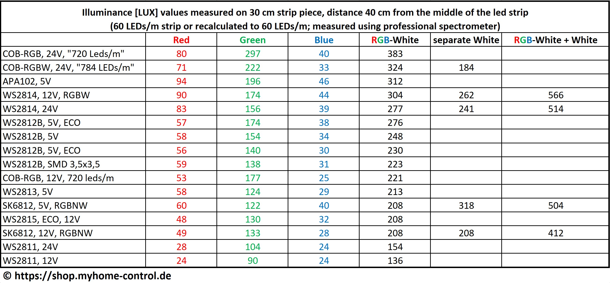
Die Antwort ist eindeutig: LED Streifen mit einer separaten weißen LED (sog. RGBW LEDs) bieten viel bessere Farbqualität als reine RGB LED Streifen. Man kann zwar auch mit reinen RGB LEDs ein weißes Licht erzeugen (sog. RGB-Weiß), dieses ist jedoch von der Farbqualität sehr minderwertig. Das bedeutet, dass Gegenstände in diesem Licht farblich stark verfälscht erscheinen im Vergleich zum deren Aussehen unter einem normalen Tageslicht. Das liegt daran, dass RGB-Weiß im Grunde kein weißes Licht ist, sondern eine Mischung von Rot-Grün-Blau ist, wobei aber viele anderen spektralen Anteile in diesem Licht fehlen, wie folgendes Bild zeigt:
Die Farbqualität wird oft in CRI (Ra) gemessen, wenn auch im professionellen Bereich mittlerweile besser geeignete verfahren wie TM-30 sich etabliert haben. CRI hat einen maximalen Wert von 100. RGB-Weiß erreicht Ra Werte von ca. 20-30. Mit einer separaten weißen LED sind Werte deutlich über 80 oder sogar über 90 möglich.
Im Vergleich zu RGB-Weiß erzeugt eine separate weiße Led ein deutlich natürlicheres weises Licht, wenn auch dessen Spektrum auch weit von dem natürlichen Tageslicht entfernt ist. Das ist jedoch ausreichend, um eine gute Farbwiedergabe zu erreichen. Wenn man jedoch die separate weiße LED zusammen mit RGB-Weiß mischt (um z.B. höhere Beleuchtungsstärke zu erreichen), verschlechtert man wieder die Farbqualität. Das ist beispielhaft im Folgenden für zwei LED Typen dargestellt.
Um die Effizienz zu vergleichen, können vereinfacht die Daten der Beleuchtungsstärke (siehe Frage „Welche adressierbare LED Typen sind die hellsten?“) mit der Daten des LED-Verbrauchs (WLED Calculator) in Relation gestellt werden, da beide Datensätze auf der Vermessung der gleichen LED-Streifen basieren. Dabei muss man bei RGB(W) LED-Streifen zwischen der Effizient bei Einzelnen-Farben (RGB) und der Effizienz im Mischmodus (RGB-Weiß) unterschieden werden:
1) R/G/B-Farben: die Beste Effizienz haben die Typen SK6812 (5V, 12V) und WS2814 (12V, 24V). Im Mittelfeld sind die Typen WS2812B, WS2813, APA102. Die schlechteste Effizienz haben die Typen WS2815 (12V) und WS2811 (12V, 24V).
2) RGB-Weiß: die Beste Effizienz hat der Typ SK6812. Im Mittelfeld sind die Typen WS2812B, WS2813, APA102, WS2814, WS2815. Die schlechteste Effizienz haben die Typen WS2811 (12V, 24V).
3) Separate weiße LED: WS2814 Typ schient etwas höhere Effizienz als SK6812 zu haben, beide liegen jedoch nahe zueinander.
An dieser Stelle wird bewusst auf die Darstellung der quantitativen Vergleichsergebnisse verzichtet, da diese wegen der Komplexität des Begriffs Beleuchtungsstärke und wegen hohen Unsicherheiten bei deren Vermessung nur mit einem Augenmaß bewertet werden können.
Analoge LED Streifen brauchen für die Ansteuerung nicht nur einen Mikrocontroller, sondern in jedem Fall einige zusätzlichen Komponenten wie MOSFETs.
Ein Prinzipschaltbild ist hier dargestellt. Pro Farbe braucht man einen MOSFET und einen GPIO. Man beachte, dass die MOSFETS bei Überlast sehr schnell zerstört werden. Um Brandgefahr zu verringern und Verletzungen zu vermeiden, sollte man zusätzliche Schaltungselemente vorsehen um MOSFETS gegen Übertemperatur und Überlast zu schützen. Schmelzsicherungen sind je nach Typ dafür zu langsam! Es können auch selbst-schützende MOSFETs verwendet werden oder man packt die ganze MOSFET Schaltung in ein brandhemmendes (z.B. metallisches) Gehäuse. Es gibt auch ein fertiges PWM Board, welches zudem mehrere, aufeinander abgestimmte Schützmechanismen implementiert.
Es können auch einige sogenannten RGB(W) LED-Verstärker eingesetzt werden (werden auch Repeater/Booster genannt). Typen, die Optokoppler beinhalten, sind geeignet. Diese haben dann auch eine MOSFET-Schaltung (1 bis 5 Kanäle) und können z.B. wie folgt verwendet werden (Achtung, Stand 2025: mittlerweile gibt es viele Varianten ohne Optokoppler im gleichen Gehäuse. Diese kann man von außen dann nicht unterscheiden und diese sind nicht geeignet. Deren Einsatz wird sehr wahrscheinlich zum Defekt vom Controller führen!):
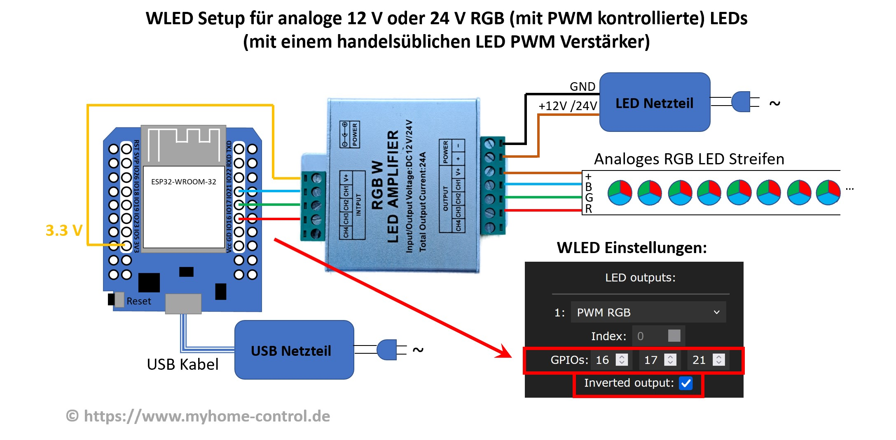
Man merke, dass zwischen dem Controller und dem Verstärker keine GND Verbindung besteht. Und das obwohl bei allen anderen WLED Schaltungen man sagt immer, dass alle GNDs müssen miteinander verbunden werden. Diese Besonderheit hier ist aber dem geschuldet, dass die Eingänge des Verstärkers von Ausgängen durch Optokoppler galvanisch entkoppelt sind und der Verstärker in dieser Schaltung etwas anders verwendet wird, als seine übliche Anwendung.
Man kann dabei die GPIOs direkt (3.3V Signalpegel) zum Eingang des Verstärkers anschließen oder, wenn man einen fertigen WLED Controller verwendet, auch die Datenausgänge (des LevelShifters, also 5V Signalpegel) nutzen. Man kann auch beides gleichzeitig verwenden:
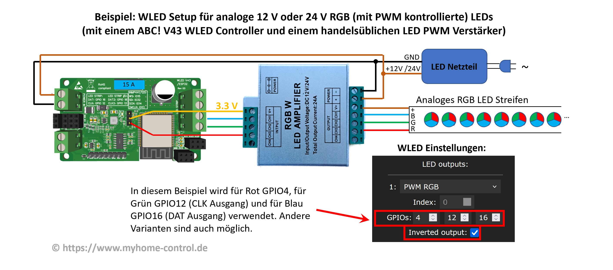
Der auf dem Bild dargestellte Verstärker ist ein günstiges Produkt. Sein Vorteil ist ein metallisches Gehäuse. Seine Schaltung ist jedoch sehr einfach gebaut:
Der einfache Aufbau führt dazu, dass der Tastgrad des PWM Signals (Das Verhältnis zwischen Impuls und Periodendauer) am Ausgang im Vergleich zum Eingang etwas verfälscht wird. In vielen Fällen stellt das kein Problem dar, führt aber dazu, dass die Zusammensetzung der Farben bei einem RGB Streifen etwas verfälscht wird. Ein deutlich bessere (und etwas teurere) Version ist in diesem Artikel (auf Deutsch) beschrieben. Hier werden die MOSFET mit Push-Pull Treibern gesteuert. Dies und einige anderen Maßnahmen in der Schaltung führen dazu, dass das PWM Signal am Ausgang sehr genau wiedergegeben wird.
Prüfen Sie immer vorher, dass Ihr Verstärker Optokoppler-basiert ist! Im gleichen Gehäuse können verschiedenen Versionen verkauft werden.
Es sind auch andere Varianten auf dem Markt (z.B. MiBoxer RGBW 5-Kanal Verstärker und baugleiche), die eine genauere PWM Wiedergabe ermöglichen, jedoch eine Modifikation brauchen wie in diesem Bild dargestellt:
Mit dieser Modifikation kann dieser Verstärker zum Beispiel wie folgt eingesetzt werden:
Der Nachteil von diesem Typ ist jedoch, dass er ein Kunststoffgehäuse besitzt. Wir haben nicht untersucht, ob dieses Kunststoffgehäuse brandhemmend wirkt. Es sind daher eventuell besondere Sicherheitsvorkehrungen notwendig.
Drei andere Typen sind in im Folgenden abgebildet:
Der erste Typ funktioniert ganz gut, der zweite nur mit der Modifikation der Widerstände. Der dritte Typ darf in keinem Fall für die hier besprochene Anwendung eingesetzt werden, da er keine galvanische Trennung durch Optokoppler besitzt und ein Versuch den zu verwenden würde zur Zerstörung des WLED Controllers führen.
LED Streifen mit diesem Typ sind RGBW Streifen, ähnlich wie SK6812 Typ. Sie müssen also in WLED Einstellungen als SK6812 Typ behandelt werden. Zudem bei diesen Streifen ist oft der weiße Kanal und der Grüne Kanal vertauscht, man muss also in WLED Einstellungen „Swap W & G“ einstellen. Diese Einstellungsoption gibt es erst ab WLED Version 0.14.0-beta1.
Zu einem ist bei diesen Typen ein störungsfreier Betrieb meistens nur mit einem LevelShifter möglich. Zum andren ist oft bei diesen Typen einzelne LEDs in Gruppen von 3 (bei 12V) oder in Gruppen von 6 (bei 24V) geordnet. LEDs in einer Gruppe lassen sich nicht unabhängig voneinander einsteuern. Man spricht auch von einer logischen LED, die dann physikalisch halt aus 3 oder 6 LEDs besteht.
Die meisten adressierbaren LED Typen benötigen nur ein Datensignal für die Ansteuerung. Die Frequenz des Steuersignals ist bei diesen Typen fest. Es gibt aber auch adressierbaren LED Typen, die außer Datensignal ein Clock-Signal benötigen. Bei diesen Typen wird als Taktgeber vom Controller an LED Streifen ein Clock Signal übertragen. Für diese Typen werden also für die Ansteuerung zwei GPIOs gebraucht und diese müssen in WLED Einstellungen korrekt eingestellt werden. Der Vorteil ist, dass durch die Clock-Steuerung eine schnellere Datenübertragung vom Controller an LED Streifen möglich. Es lassen sich schnellere Effekte bei sehr vielen LEDs ablaufen.
LED Streifen Typen WS2813 und WS2815 besitzen eine zweite (backup) Datenleitung. Diese wird auf dem Streifen als BI (backup input) / BO (backup output) gekennzeichnet. Durch diese zweite Datenleitung wird erreicht, dass wenn eine LED ausgefallen ist, werden die Daten bei weiteren LEDs trotzdem ankommen. Datensignal (DI/DO), GND und +V werden am Controller angeschlossen. Backup Leitung (Input BI) muss an GND angeschlossen werden.
Die Leitungen für die Datenübertragung (Daten- und ggf. Clock-Signale) können einen sehr kleinen Querschnitt besitzen, weil da kaum Strom fließt. Die Leitungen für die Stromversorgung (GND und 5V/12V/24V etc.) müssen aber ordentlich dimensioniert werden. Dafür sollte man ausreichende elektrotechnischen Kenntnisse besitzen. Als eine Hilfe kann für die Auslegung der WLED Calculator verwendet werden.
Für einen sicheren Betrieb müssen die Leitungen und LED Streifen unter anderem gegen Überlast und Kurzschluss abgesichert werden. Das ist allerdings nicht damit getan, einfach irgendeine Sicherung einzubauen. Eine Sicherung, z.B. eine Schmelzsicherung, ist nur dann wirksam, wenn sie richtig ausgelegt ist. Dafür sollte man ausreichende elektrotechnischen Kenntnisse besitzen. Als eine Hilfe kann für die Auslegung der WLED Calculator verwendet werden.
Ein längeres LED Streifen mit vielen LEDs kann recht viel Strom benötigen. Diesen Strom kann man nicht in voller Höhe nur am Beginn eines LED Streifens einspeisen. Das Problem ist, dass wegen des Spannungsabfalls innerhalb des Streifens an hinteren LEDs dann zu wenig Spannung ankommt, so dass diese dann nicht mit voller Stärke leuchten oder sogar die Farben verfälschen. Es kann also notwendig sein, LED Streifen auch von hinten oder sogar zusätzlich auch an einer oder mehreren Stellen dazwischen mit Strom zu versorgen. Wie viele Einspeisungen man idealerweise braucht, kann mit dem WLED Calculator berechnet werden.
Nein. Der bei der Sicherung angegeben Stromwert ist ein sogenannter Nominalwert der Sicherung. Deren genaue Bedeutung ist je nach Sicherungstyp leicht unterschiedlich. Betrachten wir im Folgenden als Beispiel eine typische KFZ Sicherung. Diese werden oft in WLED Controllern eingesetzt, weil deren Spanungsbereich (bis 32V), Tauglichkeit für DC-Ströme und großer Auswahl an Nominalwerten (1 A bis 40 A) sie dafür besonders geeignet machen. Diese Sicherungen sind in der Norm ISO 8820-3 spezifiziert und besitzen daher immer ein ähnliches Verhalten, auch wenn sie von diversen Herstellern produziert werden. Aber Achtung: auf diversen Verkaufsplattformen sind oft billige Nachbauten zu finden, die diese Spezifikation gar nicht erfüllen und teilweise somit gar nicht richtig funktionieren. Also, z.B. eine 10A KFZ Sicherung muss 110% vom Nominalstrom, also 11A, noch mindestens 100 Stunden tragen können. 135% vom Nominalstrom (also 13,5A) wird sie auch immer noch 0,75 s bis 600 Sekunden tragen, bevor sie schmelzt und den Strom trennt. Den doppelten Strom (20A) kann Sie noch bis zu 5 s tragen, mindestens 0,15 s. Und sogar noch 6-fachen Strom (60 A) wird sie bis zu 100 ms tragen. Diese Angaben gelten für die nominale Raumtemperatur, bei anderen Temperaturen können die Zeiten noch anders sein. Also wenn z.B. eine 10A Sicherung den Strom von 20A noch bis zu 5s tragen kann, müssen auch andere Komponenten, die die Sicherung schützen muss, diesen Strom noch tragen können, ohne dass sie in dieser Zeit beginnen zu brennen etc.
Oft meint man, man kann irgendeine Sicherung einsetzen und damit ist alles sicher. In keinem Fall! Nur eine korrekt ausgewählte und dimensionierte Sicherung kann bei Überlast oder Kurzschluss rechtzeitig abschalten und damit ein Brand verhindern. Dabei ist die Vorgehensweise wie folgt:
1. Man bestimmt den notwendigen Betriebsstrom, der durch die Sicherung fließen muss. Das ist also z.B. der Strom, den die LEDs maximal verbrauchen.
2. Nun wählt man eine Sicherung, die genug Stromtragfähigkeit besitzt, um bei einem Betriebsstrom über die Lebensdauer zu funktionieren, ohne zu früh durchzuschmelzen.
3. Man wählt Verbindungskabel, Klemmen etc. Dabei spielen zwei Aspekte die Rolle:
a) Diese Komponenten dürfen nicht nur bei einem Betriebsstrom nicht überhitzen, sie müssen auch alle Ströme so lange standhalten können, wie lange sie die Sicherung durchlässt. Wenn z.B. bei einem Betriebsstrom von 8A eine 10A KFZ Mini-Sicherung gewählt wurde, müssen die Kabel etc. 11 A dauerhaft tragen können, 13,5 A für mindestens 600 s, 20 A für 5 Sekunden und sogar noch 60A für 100 ms ohne in Brand zu geraten.
b) Verbindungskabel dürfen keinen zu hohen Spannungsabfall verursachen. Hier kommt es nicht nur auf den Querschnitt des Kabels an, sondern auch auf die Länge. Der Spanungsabfall kann der Grund sein, warum man einen deutlich höheren Querschnitt nehmen muss, obwohl aus Punkt a) kein so großer Kabelquerschnitt notwendig wäre.
Einen guten Startpunkt liefert WLED Calculator.
Es sind vor allem drei Abzweigungen relevant:
1. Das Original: Aircoookie WLED. Das ist die ursprüngliche/originale WLED SW. Bis zu Version 0.13.3 gab es in dieser Version keine Möglichkeit Sound Reactive WLED zu machen. Ab Version 0.14.0 ist ein sog. Audio Reactive Usermod vorhanden.
2. (veraltet) Sound Reactive WLED: dieser Zweig ist vor einigen Jahren entstanden und implementiert die sogenannte Sound Reactive WLED. Dabei ist es möglich mit einem Mikrofon oder Line-In Eingang an erreichen, dass die LEDs auf die Musik (oder andere Geräusche) reagieren und zum Beispiel in Takt dann leuchten. Mittlerweile muss dieser Zweig als veraltet angesehen werden. Man sollte den originalen mit Audio Reactive Usermod verwenden.
3. MoonModules WLED: diese Abzweigung ist eine „Spielwiese“, geschaffen durch einige WLED Entwickler, um vor allem neue Funktionen auszuprobieren oder Änderungen an vorhandenem Code zu testen.
Über diesen WLED Installer können Sie sich jede Version installieren und ausprobieren.
Ein Usermod ist im Prinzip eine Erweiterung, die ein Nutzer/Programmierer zusätzlich zum Grundfunktionsumfang der WLED Software programmieren kann. Um ein Usermod nutzen zu können, muss dieser zusammen mit WLED Software kompiliert werden. Offizielle WLED Releases beinhalten keine Usermods, inoffizielle Quellen wie WLED Installer bieten auch bereits kompilierte WLED Versionen mit einigen Usermods an. Das bedeutet jedoch in vielen Fällen, dass wenn Sie ein oder mehrere Usermods verwenden möchten, müssen sie WLED Software dafür selbst kompilieren. Dabei kann dieser WLED Online Compiler hilfreich sein. Dabei muss man auch beachten, dass einige Usermods veraltet sein können und mit aktueller WLED Version eventuell nicht oder nicht vollständig korrekt funktionieren, weil Usermods eben nicht von WLED Community, sondern oft von einzelnen Nutzern/Entwicklern programmiert wurden und daher auch nicht besonders gut gepflegt bzw. auf dem Laufenden gehalten werden.
Segmente sind die Möglichkeit, ein LED Streifen in virtuelle Teile aufzuteilen um jedem Teil eine eigene Farbe oder ein eigenes Effekt zuzuweisen. Damit lassen sich vielfältige Effekte realisieren. Z.B. man kann LED Streifen in zwei Segmente aufteilen und das zweite Segment als ein gespiegeltes einstellen: damit kann man dann symmetrische Effekte realisieren.
Ab WLED Version 14.0 werden bei Effekten zusätzliche Symbole angezeigt. Diese weisen auf bestimmte Möglichkeiten oder Besonderheiten des jeweiligen Effekts hin:
„Ein Punkt“: 0D-Effekte, also Effekte, bei dnene alle LEDs gleich leuchten.
„Drei Punkte“: 1D-Effekte, also Effekte für ein LED Streifen.
„Matrix“: Diese Effekte sind 2D Effekte für LED Matrizen.
„Palette“: Bei diesem Effekt können unterschiedliche Paletten eingestellt werden.
„Note“: Dieser Effekt ist ein Audio Reactive Effekt und reagiert auf die Lautstärke des Audiosignals.
„Doppelte Note“: Dieser Effekt ist ein Audio Reactive Effekt und reagiert auf die Frequenzen in dem Audiosignal.
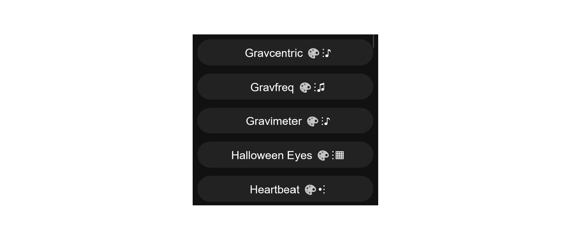
Leider nicht direkt. WLED Interface im Browser oder WLED App funktionieren nur dann, wenn der Controller und der PC/Smartphone im gleichen lokalen Netzwerk sind. Eine sichere direkte Ansteuerung über Internet ist nicht möglich. Es ist jedoch möglich ein Hausautomatisierungssystem zu installieren (spezielle Hardware notwendig), wie z.B. Home Assistant oder IoBroker. Diese haben die Möglichkeit WLED Controllern anzusteuern und stellen gelichzeitig die Optionen zur Verfügung, auf die Systeme über Internet zuzugreifen. Eine andere Option ist eine VPN Verbindung einzurichten. Einige moderne Router unterstützen das. Dann verbindet man sich erst über Internet mit seinem Netzwerk zu Hause (über sichere VPN Technologie) und dann kann man auf WLED wie gewohnt zugreifen. Noch eine einfache, aber vom Umfang her limitierte Option ist, WLED Controller mit Alexa Gerät (wie Amazon Echo) zu verbinden, wenn man einen hat. Dann kann man über Alexa App den Controller zu steuern, allerdings nur limitiert auf ein- und ausschalten sowie Helligkeit ändern. Man könnte natürlich theoretisch den direkten Zugriff vom Internet auf WLED Controller im Router freizugeben. Das ist jedoch extrem unsicher, weil die Daten keinerlei geschützt sind und jeder so Ihr Controller ansteuern kann.
Ja. Man muss im Bereich „Alexa Voice Assistant“ unter „Config->Sync Interfaces“ beim „Emulate Alexa device:“ den Hacken setzen und mit „Save“ abspeichern. Dan startet man den Controller neu, startet in Alexa App die Suche nach neuen Geräten und richtet den Controller wie eine Lampe ein. Die Steuerungsmöglichkeiten sind allerdings stark begrenzt auf ein- und ausschalten, Helligkeit ändern sowie einige Presets aufrufen.
Dafür sind zwei Schritte notwendig. Erstens muss man ein Preset erstellen, der die gewünschte Farbe oder ein Effekt aktiviert. Zweitens muss man unter Config -> LED Preferences bei der Einstellung „Apply preset … at boot“ den ID von dem erstellten Preset eintragen und unten auf „Save“ klicken.
Genau so kann auch eine ganze Playliste beim Hochfahren abgespielt werden. Dafür muss man anstatt Preset ID einen Playlist ID in die oben genannte Einstellung eintragen.
„Mapping“ ist die Möglichkeit die Reihenfolge der einzelnen LEDS in dem Streifen programmtechnisch zu ändern. Normalerwiese sind alle LEDs in einem Streifen datentechnisch (also über die Datenleitung) in Serie nacheinander verschaltet: 1->2->3->4->…. Für einige spezielle Effekte oder insbesondere für 2D Matrizen will man oft die Reihenfolge ändern, jedoch ohne dass man das ganze Streifen anders zusammen löten muss. Man kann z.B. erreichen, dass alle 3 LED die Reihenfolge der LEDs sich umkehrt, also durch Mapping so einstellen, als ob die logische Reihenfolge der LEDs im Streifen so wäre: 1->2->3->6->5->4->7->8->9->12->11->10 usw.
Mapping wird eingestellt über eine JSON Datei, die ledmap.json heißen muss. Man muss also eine spezielle Datei in JSON Format vorbereiten. Für den oben genannten Beispiel wird der Inhalt dieser Datei dann wie folgt aussehen: {"map":[0,1,2,5,4,3,6,7,8,11,10,9]}. Man beachte dabei, dass die LEDs dabei beginnend mit 0 nummeriert werden. Außerdem sollte man vermeiden unnötige Leerzeichen zu verwenden. Man kann einzelne LED Positionen weglassen indem man an der Stelle -1 angibt.
Es können auch mehrere Maps definiert werden. Für jede Map verwendet man dann eine eigene Datei mit dem Namen ledmapX.json, wo X die Nummer ist (1, 2 etc.). Welche Map dann verwendet wird, kann man in einem Preset mit "ledmap":X,... festlegen, wobei X die Map Nummer der JSON Datei ist. Also dann sieht im einfachsten Fall der Inhalt von dem Preset (API command) wie folgt aus: {"on":true,"ledmap":1}. Die ledmap.json Datei (also ohne Nummer) wird dagegen nicht über Preset, sondern immer beim Starten automatisch angewendet.
Die erstellte ledmap.json Datei (oder halt ledmapX.json Dateien) muss man auf WLED Controller hochladen. Dafür öffnet man im Browser die Adresse http://YourWLEDIP/edit, wobei YourWLEDIP ist die IP Adresse von Ihrem WLED Controller ist. Das ist ein Werkzeug um die Konfigurationsdateien auf dem WLED Controller zu bearbeiten. Damit diese Seite korrekt angezeigt wird, muss ihr Controller mit dem Internet verbunden sein, also bereits in Ihr WLAN Netzwerk integriert sein und nicht mehr „nur“ als WLED-AP verfügbar sein. Man kann die JSON Dateien auch hier direkt erstellen. Damit die erstellte oder hochgeladene ledmap.json Datei auch angewendet wird, muss der Controller neu gestartet werden.
Ja. 2D Support wurde zuerst in Sound Reactive WLED eingeführt du wurde dann in Standard WLED Version 0.14.0 auch implementiert und noch deutlich verbessert. Dieser Stand wird hier beschrieben.
Um 2D LED Matrize einzustellen, geht man zu "Config" -> "2D Configuration". Hier kann man die Anzahl der physikalische Paneele definieren, die in Summe eine Matrize bilden. Im einfachsten Fall besteht die Matrize aus einem Paneel.
Für jedes Paneel stellt man die Eigenschaften ein: Position der ersten LED, Orientierung, Anzahl der LEDs in X und Y Richtung. Man sollte nicht vergessen, unter "Config" -> "LED Preferences" auch die LEDs korrekt einzustellen: die gesamte Anzahl der LEDs, GPIO etc.
Hat man alles korrekt eingestellt, können 2D Effekte sinnvoll verwendet werden. Man kann auch mit Hilfe von WLED auf LED-Matrizen einfache Bilder darstellen (siehe nächste Frage).
Ja. Mit Hilfe von speziellen API-Befehlen, die man auch als ein Preset einstellen und abspeichern kann, kann man WLED sagen in welcher Farbe und Helligkeit jeder einzelne Pixel angesteuert werden muss. So kann ein Bild dargestellt werden. Wenn man manuell ein Bild in ein API-befehl umwandeln möchte, würde man sehr viel Zeit brauchen. Es gibt jedoch ein Tool (PixelArt Converter), welches dabei hilft. So kann jeder auch ohne WLED API Kenntnisse ein Bild in ein API Befehl umwandeln, welches von WLED Software verstanden wird. Die Source Code von diesem Tool ist hier (ext. Link) zu finden. Im folgenden wird beschrieben, wie es funktioniert. Im Wesentlichen besteht das ganze aus drei Schritten:
1) WLED PixelArt Converter von GitHub auf den PC herunterladen und in einem Browser öffnen
2) Bild auswählen, Parameter einstellen und umwandeln
3) Das Ergebnis (API Befehl) an den WLED Controller senden und ggf. als ein Preset abspeichern.
Um den WLED PixelArt Converter zu verwenden muss man die Datei https://raw.githubusercontent.com/werkstrom/WLED-PixelArtConverter/main/pixart.htm (ext. Link) herunterladen. Wenn die Datei dabei sich im Browser öffnet, dann mit der rechter Maustaste klicken und dann auf "Speichern unter" bzw. "Seite Speichern unter". Dann kann man die gespeicherte Datei im Browser wie eine Webseite öffnen:
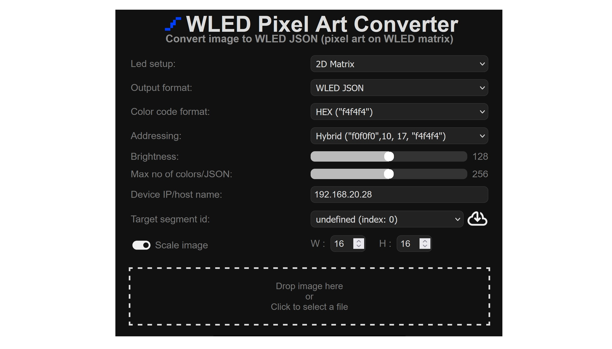
Hier muss man die IP Adresse von dem eigenen WLED Controller unter "Device IP/host name:" eintragen. Danach kickt man auf "Vom Cloud herunterladen" Symbol. Im einfachsten Fall, wenn man in WLED selbst keine Segmente definiert hat, erscheint hier unter "Target segment id:" folgendes: "undefined (index: 0)". Man sollte normalerweise "Scale image" einschalten und die Dimension der Matrize (X/Y) eingeben. Als nächstes wählt man die Datei mit dem Bild. Danach erscheint unten sofort das originale Bild, das generierte API-Befehl
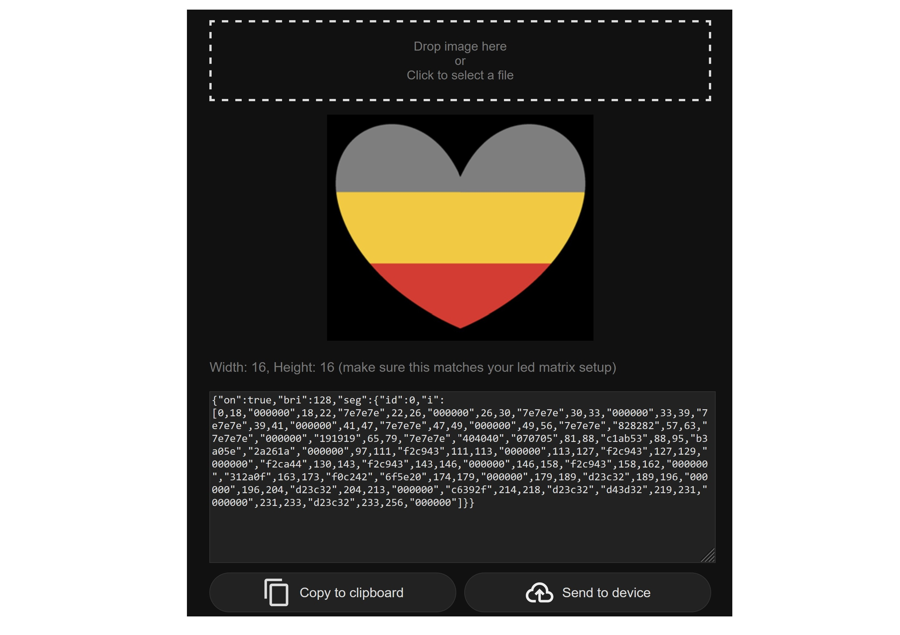
und eine Vorschau, wie LEDs angesteuert werden:
Mit "Send to device" kann man das Bild direkt an WLED Controller senden. Das ergebnis sieht dann wie folgt:
Damit das Bild auf dem Controller dauerhaft gespeichert ist, muss man API Befehl kopieren und dann als ein Preset im WLED Controller speichern. Dafür erstellt man einen neuen Preset, gibt dem einen Namen, wählt die Option "Use current state" ab, fügt das API-Befehl in das API-Eingabebereich ("API Command") ein und speichert das Preset:
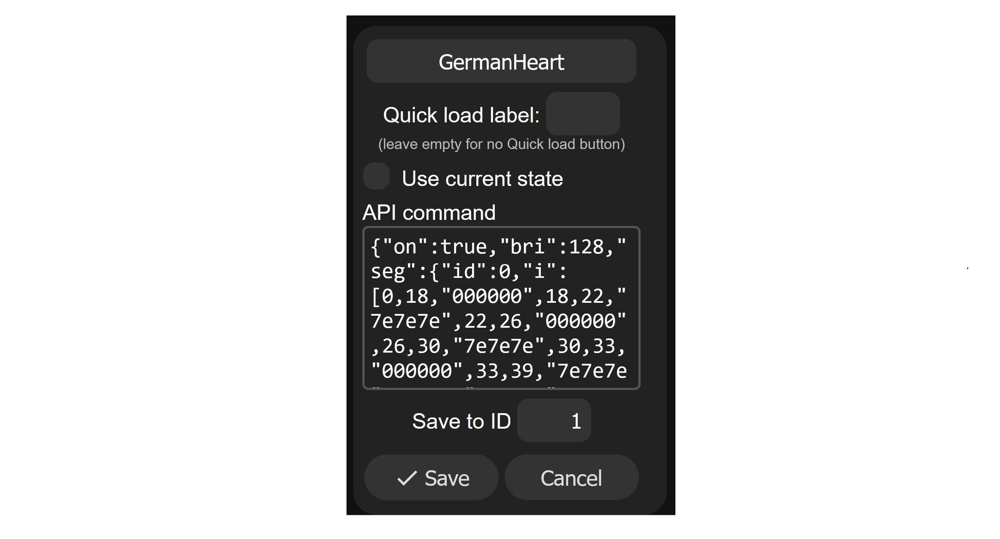
Ja. Ab WLED Version 0.14.0 ist ein Effekt „Scrolling Text“ vorhanden. Der Text, der angezeigt werden soll, wird durch Segment Name eingestellt. Im einfachsten Fall hat man nur ein Segment und man benennt diesen mit dem Text, der angezeigt werden soll. Beim Lauftext kann man unter anderem die Schriftgröße und die Geschwindigkeit regulieren.
Es ist auch möglich den Lauftext mit einem anderen Effekt überlagern. Man kann z.B. so als Hintergrund für den Text eine Farbe einstellen. Dafür muss man zwei Segmente einstellen, die exakt gleich (außer Segmentname). Dann überlappen sich die Segmente quasi.
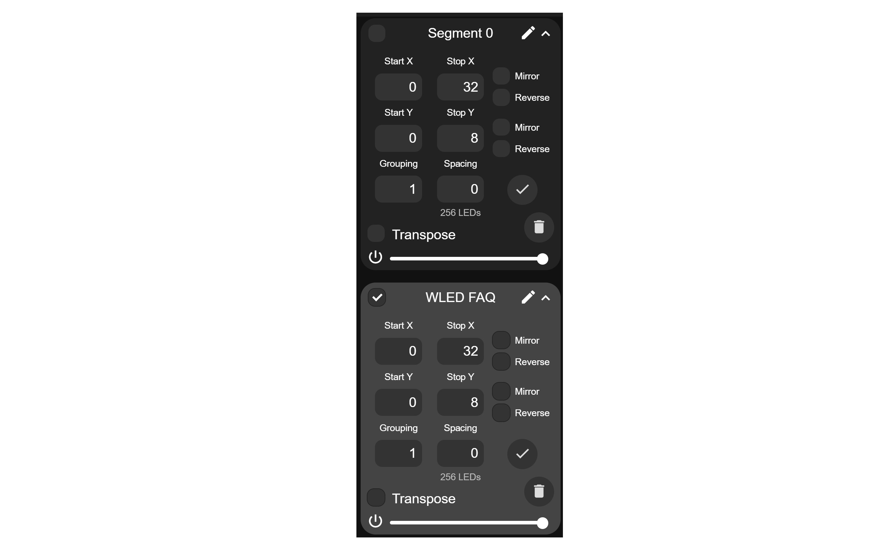
Bei dem ersten Segment stellt man den gewünschten Effekt ein, der als Hintergrund dienen soll (z.B. „Solid“ für eine einfache Hintergrundfarbe). Bei dem zweiten Segment gibt man den gewünschten Text als Segmentname ein und wählt „Scrolling Text“ Effekt. Dabei muss man „Overlay“ anklicken.
Ein Preset ist eine gespeicherte LED Lichtkonfiguration, die man später erneut aufrufen kann, ohne dass man alles wieder neu einstellen muss. Man kann zum Beispiel für ein bestimmtes gewünschtes Effekt Segmente einstellen, für jedes Segment eine Farbe oder ein Effekt definieren. Diese Einstellungen kann man dann in einem Preset abspeichern und mit einem Click immer wieder aufrufen, wen man es braucht. Man kann auch in WLED Einstellungen einstellen, dass ein bestimmtes Preset beim Start des Controllers automatisch aufgerufen wird. Oder man kann ein physikalischer Taster an den Controller anschließen und diesem Taster dann ein Preset zuweisen. Oder man kann in WLED Einstellungen einstellen, dass ein Preset zu einer bestimmter Tageszeit aktiviert wird.
Im Folgenden werden einige Preset Beispiele gezeigt. Presets kann man erstellen, indem man den aktuellen Zustand erfasst und als Preset abspeichert. Oder man kann ein Preset durch ein API Befehl beschreiben. API Befehle gibt es zwei Varianten: HTTP API oder JSON API. Man kann wahlweise die eine oder die andere Variante verwenden, wobei JSON API mehr Möglichkeiten bietet. Diese API Befehle muss man dann bei Preset im Fenster „API command“ eintippen:
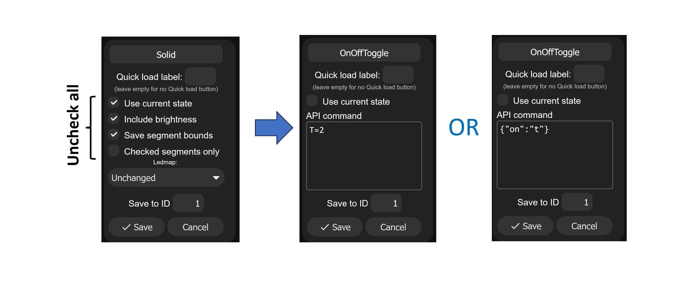
Beispiele:
| HTTP API | JSON API | Beschreibung |
|---|---|---|
| T=2 | {"on":"t"} | Es wird zwischen Ein und Aus Zustand gewechselt (toggeln). Also wenn LEDs aus sind, werden die eingeschaltet und umgekehrt. |
| T=1 | {"on":true} | Die LEDs werden eingeschaltet (bzw. keine Änderung, wenn sie schon davor eingeschaltet waren) |
| T=0 | {"on":false} | Die LEDs werden ausgeschaltet (bzw. keine Änderung, wenn sie schon davor eingeschaltet waren) |
| {"on":true,"tt":0} | Die LEDs werden eingeschaltet, dabei leuchten die LEDs sofort ohne langsames dimmen unabhängig von der globalen Einstellung „Transition“. | |
| A=128 | {"bri": 128} | Die Helligkeit wird auf 50% eingestellt. Minimaler Wert ist 0, maximaler Wert (100%) ist 255. Daher bedeutet 128 die Helligkeit von 50% |
| A=~10 | {"bri":"~10"} | Die Helligkeit wird um 10 erhöht. Also wenn diese bisher 100 war, wird es 110. |
| A=~-20 | {"bri":"~-10"} | Die Helligkeit wird um 20 verringert. Also wenn diese bisher 100 war, wird es 80. |
| R=255&G=0&B=0 | {"seg":[{"col":[[255,0,0]]}]} | Die Farbe von LEDs wird auf Rot eingestellt |
| R=0&G=255&B=0&A=128&FX=0 | {"seg":[{"fx":0,"col":[[0,255,0]]}],"bri":128} | Die Farbe von LEDs wird auf Grün eingestellt, die Helligkeit auf 50% (Wert 128) und Effekt auf Solid (FX=0) |
| P1=1&P2=3&PL=~ | {"ps":"1~3~"} | Zwischen Presets mit IDs 1 bis 3 iterieren: Beim aufrufen wird nächstes Preset aufgerufen und so zyklisch weiter: 1->2->3->1->2->3->1->….. |
| FX=0&R=r&G=r&B=r | Eine zufällige Farbe einstellen (konstant, FX=0) |
Playlist (eine Playliste) ist die Möglichkeit eine ganze Reihe von Presets nacheinander abspielen zu lassen. So lassen sich aus einzelnen Effekten noch komplexere Effekte erstellen. Für jeden Preset kann man dabei die Abspieldauer (Duration) du die Übergangszeit zum nächsten Preset (Transition) definieren. Man kann wählen, ob die Playliste nur einmal oder unendlich oft (Repeat indefinately) abgespielt wird. Man kann auch einstellen, dass einzelne Presets in der Playliste nicht in definierter Reihenfolge, sondern zufällig nacheinander abgespielt werden (Shuffle).
WLED UDP Sync ist die Möglichkeit mehrere WLED Controller so zu betreiben, dass die angeschlossenen LED Streifen an jedem Controller zueinander synchron und exakt gleich angesteuert werden, also immer gleiche Farbe oder gleiches Effekt abspielen indem man diese Farbe oder Effekt nur bei einem Controller einstellt. Man kann auch einstellen, was genau synchronisiert sein muss: Helligkeit, Farbe, Effekte, Segmente etc. So können mehrere LED Streifen das gleiche Farbspiel zeigen, auch wenn sie z.B. aus räumlichen Gründen an verschiedenen WLED Controllern angeschlossen sind. Die Einstellungen müssen im Bereich „WLED broadcast“ unter „Config->Sync Interfaces“ vorgenommen werden. Es können bis zu 8 Gruppen definiert werden. Man also z.B zwei Controller in eine Gruppe zuordnen und die anderen zwei in die andere. Dann werden die ersten zwei Controller untereinander synchronisiert (Gruppe 1) und die anderen zwei untereinander (Gruppe 2), nicht jedoch die Gruppen 1 und 2 untereinander. Auf der Haupt-User-interface WLED Seite gibt es oben ein „Sync“ Knopf, mit dem Man WLED Sync ein- und ausschalten kann. „UDP“ in „WLED UDP Sync” bedeutete, dass diese Synchronisatin über ein UDP Netzwerkprotokoll implementiert ist.
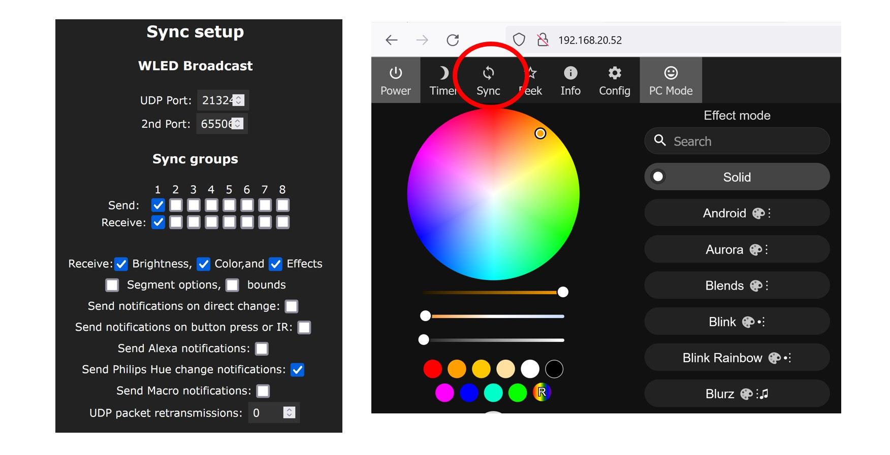
In dem Usermod "Audioreactive WLED" gibt es noch einen anderen Sync, welcher erlaubt Audio Daten von einem WLED Controller an andere Controller zu senden. Die anderen können so auch auf die Musik reagieren, ohne dass sie jeweils ein eigenes Mikrofon oder Line-in Adapter besitzen. Dieser Sync ist separat implementiert und wird auf Usermod Seite konfiguriert.
WLED Sync nutzt das sogenannte Multicast, wobei die Daten von einem Sender an mehrere/alle Empfänger im lokalen Netz gesendet werden. Einige moderne WLAN Router betrachten es als eine Art "Störung" oder "Spam" im Netz und entweder verbieten Multicast sofort oder unterbrechen es nach einiger Zeit. Wenn Sie dieses Problem haben, schauen Sie in Einstellungen Ihres Routers, ob man da Multicast (auch ggf. nach Broadcast, IGMP snooping oder UPnP suchen) explizit erlauben kann.
„Virtuelle LEDs“ sind die Möglichkeit, zwei oder mehr LED Streifen an unterschiedlichen Controllern wie ein Streifen zu betreiben. Z.B. man schlisst an einen WLED Controller ein LED Streifen an, und an einen anderen WLED Controller einen anderen LED Streifen. Man möchte aber, dass beide Streifen wie ein einzelnes Streifen angesteuert werden. Dafür muss man erstmal beide Streifen an jedem Controller ganz normal konfigurieren (LED Typ, Anzahl etc.). Dann fügt man am ersten Controller einen virtuellen LED Streifen dazu (als zweites Streifen). Man geht also zu „LED Outputs“ unter „Config->LED Preferences“, klickt auf ein „+“ Symbol und wählt da als Streifen Typ „DDP RGB (network)“ oder „DDP RGBW (network)“ aus. Hier muss man dann auch Startnummer und die LED Anzahl eingeben (am zweiten Streifen). Zudem muss man die IP Adresse von dem zweiten Controller eingeben. So wird der erste Controller sein eigenes LED Streifen und auch über Netzwerk das zweite LED Streifen ansteuern, als ob das ein wäre.
Grundsätzlich bedeuten beides das gleiche: das ist die Möglichkeit WLED Controller so zu verwenden, dass die LEDs auf Musik oder andere Geräusche reagieren und in Takt leuchten. Originale WLED Software hatte jedoch diese Möglichkeit nicht, daher wurde damals eine Abzweigung (Fork) von der Software generiert, wo diese Option dann zusätzlich implementiert wurde. Diese WLED Software heißt Sound Reactive WLED (oder kurz SR WLED). Später wurde auf Basis von Sound Reactive WLED für die originale WLED Version ein UserMod entwickelt, auch mit so einer Funktionalität. Dieser UserMod heißt AudioReactive (AR WLED). Für SR WLED und AR WLED brauchen Sie einen ESP32 basierten WLED Controller. SR WLED hat bis zur Version 0.13.0-beta3 auch ESP8266 Mikrocontroller unterstützt, danach jedoch nicht mehr.
Es werden drei Mikrofon-Typen unterstützt:
1.Analoge Mikrofone. Beispiele sind MAX4466 und MAX9814 (etwas besser). Diese Mikrofone sind einfach zu verwenden: man muss nur 3.3V, GND und den analogen Ausgang von dem Mikrofon an einen ADC Eingang (Analog-to-Digital Converter) vom einem ESP8266 oder ESP32 anschließen. Der große Nachteil ist jedoch die Qualität: sowohl von den Mikrofonen selbst als auch von den in Mikrocontroller integrierten ADCs, die eigentlich für Audioverarbeitung nicht gut geeignet sind.
2. I2S digitale Mikrofone. Beispiele sind INMP441 und ICS-43434/ICS-43432. Diese haben einen integrierten ADC und liefern bereits ein digitales Signal. Der Vorteil ist die bestmögliche Qualität. Die Nachteile sind höhere Komplexität (man braucht mehrere PINs für digitales Signal) und die Unterstützung nur bei ESP32 basierten Controllern, nicht in Kombination mit ESP8266 weil dieser keinen I2S Interface hat.
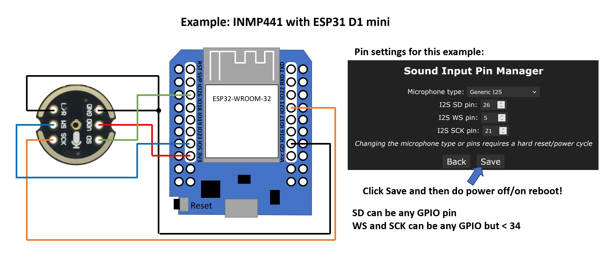
3. PDM Mikrofone. Ein Beispiel ist SPM1423. Diese sind im Prinzip auch digitale Mikrofone mit einem integrierten Sigma-Delta ADC. Sie sind etwas günstiger als I2S Mikrophone, brauchen einen PIN weniger und die Qualität ist recht gut. Auch für dieses Typ bracht man einen ESP32 basierten Controller.
In WLED Einstellungen muss dann der richtige Mikrofon-Typ sowie die verwendeten GPIOs eingestellt werden.
Ja. Es gibt dabei zwei Optionen:
1. Analoges Line-Out bzw. Kopfhörer Signal mit einer einfachen Schaltung aufbereiten und mit einem ADC Eingang vom ESP8266 oder ESP32 verbinden. In diesem Fall funktioniert das ganze wie mit einem analogen Mikrofon. Die Qualität ist hier auch nicht die beste, weil der ESP8266/ESP32 ADC für die Umwandlung von Audiosignalen nicht besonders gut geeignet ist und die Schaltung zur Signalaufbereitung sehr einfach, aber nicht besonders gut ist. Außerdem kann die Empfindlichkeit recht schlecht sein, so dass das ganze nur bei einer höheren Lautstärke des Signals funktioniert.
In einigen Fällen kann man auf diese Schaltung verzichten und GND der Audioquelle sowie ein Audiokanal (Links oder Rechts) direkt mit ESP (GND und analoges Eingang, z.B. A0 Pin beim ESP8266) verbinden. Technisch sauber ist das jedoch nicht und kann je nachdem besser oder schlechter funktionieren.
2. Analoges Line-Out bzw. Kopfhörer Signal mit einem speziellen Analog-zu-I2S Adapter (basiert z.B. auf einem CirrusLogic CS5343 oder TI PCM1808 or es7243 ICs) in ein digitales I2S Signal umwandeln und dann mit dem ESP32 verbinden. In diesem Fall funktioniert das ganze wie mit einem digitalen I2S Mikrofon. Der Unterschied ist nur, dass man einen extra PIN braucht für MCLK (Master Clock) Signal, der vom ESP32 ausschließlich an GPIOs 0, 1 oder 3 generiert werden kann. Die andere Komplikation besteht darin, dass MCLK ein Hochfrequenzsignal ist und äußerst präzise und über kurze Leitungen verdrahtet werden muss. Aus Stabilitätsgründen ist es besser, einen gebrauchsfertigen Controller mit einem speziellen dafür passenden Line-In-zu-I2S-Adapter zu verwenden wie z.B. dieser. Dann hat man die beste Qualität, Sensitivität und volle Sound Reactive Funktion.
Es gibt ein Problem mit WLED Versionen >0.13.2 in Verbindung mit einigen FritzBoxen mit SW >=7.50 und eventuell mit dem aktivierten Mesh. WLED Controller rebooten teilweise jede Minute. Eine mögliche Abhilfe (wohl aber nicht 100%) ist in FritzBox Einstellungen UPnP deaktivieren (Unter Heimnetz -> Netzwerk -> Netzwerkeinstellungen -> weitere Einstellungen -> Statusinformationen über UPnP übertragen). Eine andere mögliche Maßnahme ist in WLED Einstellungen mDNS zu deaktivieren (mDNS Name löschen). Das Problem betrifft eventuell auch einige UniFi Geräte mit dem aktivierten Mesh.
Aktuell wird ein WLED Software Build basierend auf ESP IDF V4 empfohlen, um das problem zu lösen.
Es wird oft davon berichtet, dass WLED SW 0.15.x und 0.16.x dazu führt, dass LEDs ab und zu flackern. Das Problem tritt dann auf, wenn mehr als ein LED Ausgänge verwendet werden. Nach dem aktuellen Kenntnisstand wird das flackern durch die LED RMT Ansteuerungsmethode verursacht, die genaue Ursache ist jedoch noch nicht verstanden. Um das Problem zu beheben, wurde in WLED Version 0.5.1-beta2 eine andere Ansteuerungsmethode eingeführt: ParallelI2S. Diese kann bei mehr als 2 LED Ausgängen in WLED LED Einstellungen aktiviert werden. Die Methode kann jedoch nur dann verwendet werden, wenn gleiche LED Typen an allen Ausgängen angeschlossen sind (genau genommen LEDs mit dem gleichen Timing). Außerdem ist die Anzahl der LEDs pro Ausgang auf 600 begrenzt. Ansonsten wird empfohlen nach Möglichkeit weiterhin erstmal 0.14.4 WLED Version zu verwenden.